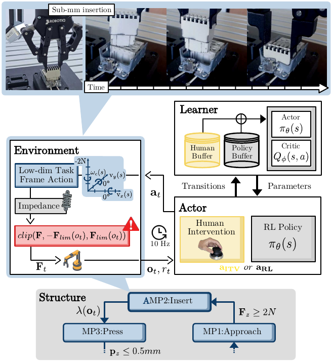
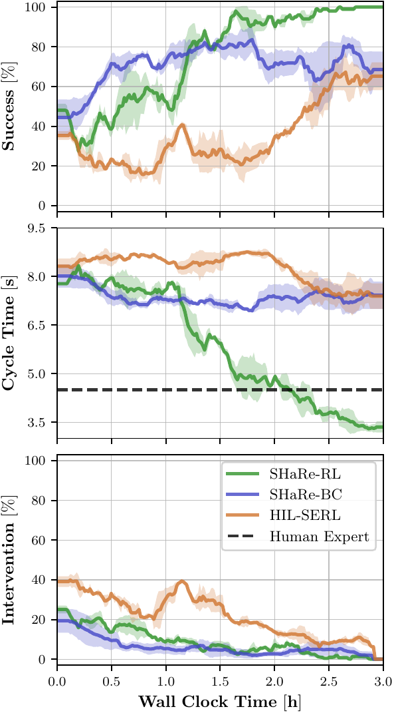
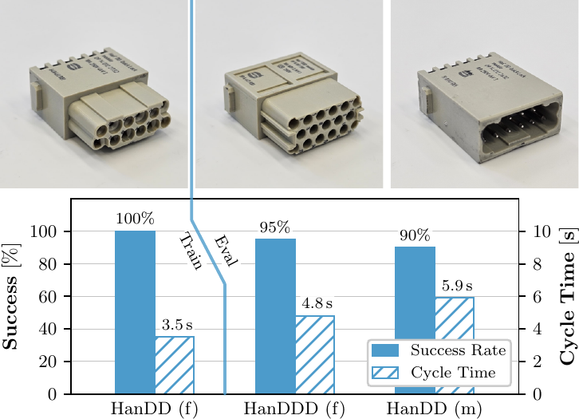

Abstract
SHaRe-RL brings real-world reinforcement learning into contact-rich industrial assembly by combining structured manipulation primitives, human demonstrations and online corrections, and per-axis compliance for bounded interaction forces.
On Harting connector insertion with 0.2-0.4 mm clearance, the method learns reliable policies within a practical wall-clock budget, improves over an unstructured human-in-the-loop RL baseline, and transfers to unseen connector variants.

Main Results
SHaRe-RL reaches robust insertion performance in under three hours of real-world interaction while keeping exploration focused on meaningful task subspaces.
Structured primitives, demonstrations, interventions, and adaptive compliance together yield faster and more reliable learning than the unstructured baseline.

Zero-Shot Generalization
The learned policy transfers to previously unseen connector variants without additional environment interaction.
This zero-shot behavior suggests that the structured task representation captures reusable assembly knowledge instead of overfitting to a single part geometry.

BibTeX
@misc{stranghoener2025sharerl,
title = {SHaRe-RL: Structured, Interactive Reinforcement Learning for Contact-Rich Industrial Assembly Tasks},
author = {Strangh{\"o}ner, Jannick and Hartmann, Philipp and Weigelt, Lisa-Marie and Braun, Marco and Wrede, Sebastian and Neumann, Klaus},
year = {2025},
eprint = {2509.13949},
archivePrefix = {arXiv},
primaryClass = {cs.RO},
doi = {10.48550/arXiv.2509.13949},
url = {https://arxiv.org/abs/2509.13949}
}